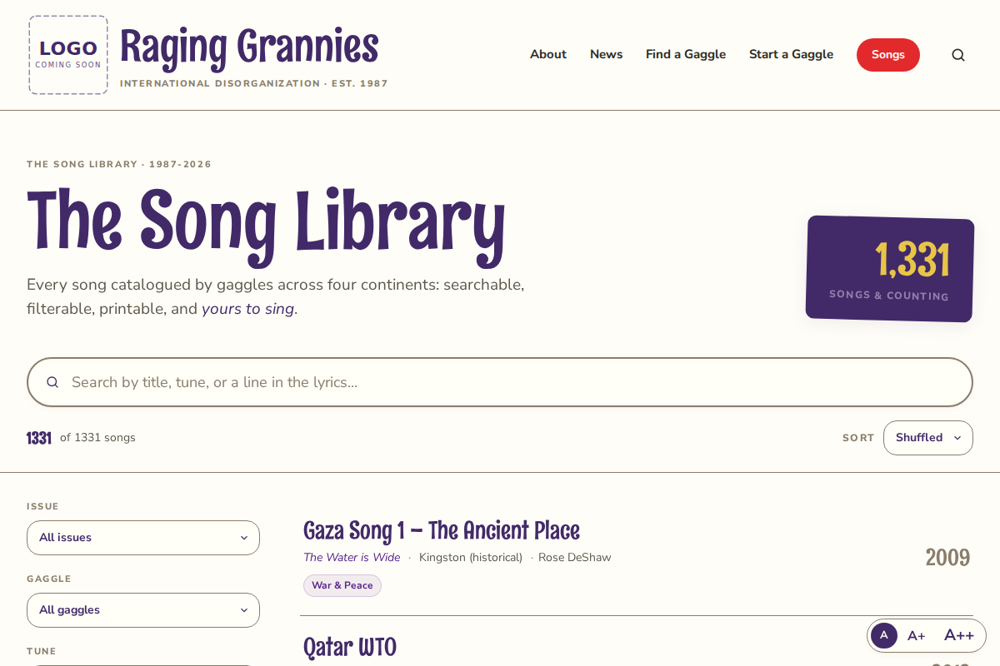
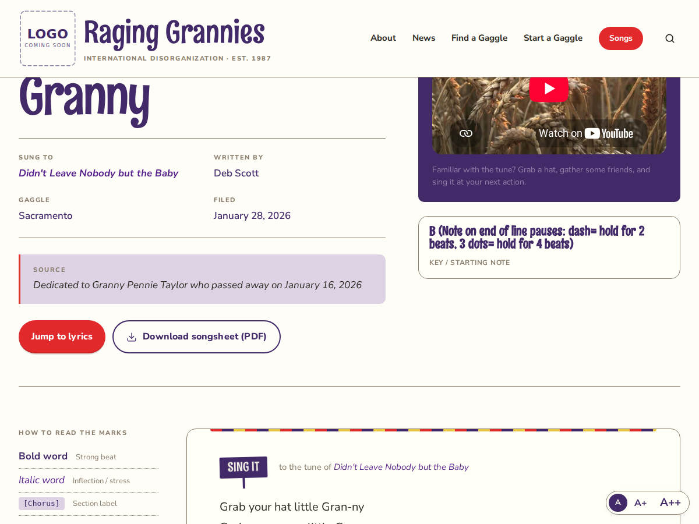
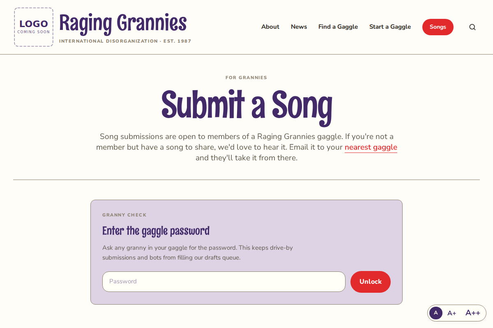

Finding, printing, and publishing songs on raginggrannies.org
Our song library holds more than 1,500 songs from gaggles around the world,
and it lives at raginggrannies.org/songs. This guide covers the
four things grannies do there most. Each one stands alone, so skip to the part
you need.
1. Finding a song
You need: nothing. The library is open to everyone.
Go to raginggrannies.org/songs in your web browser.
Click in the long oval search box near the top. It says
"Search by title, tune, or a line in the lyrics..."
Type what you remember. A title works. So does the tune it's sung to,
or any line of the lyrics.
The list below narrows as you type. No need to press Enter.
Click the song's title to open it.

The song library. The search box is the long oval near the top.
If nothing comes up: try fewer words, or a different
line from the song. You can also narrow the list with the Issue and
Gaggle menus on the left, below the search box.
2. Printing a songsheet
You need: a printer, and the song open on your screen.
Open the song you want (see above).
Click the button marked Download songsheet (PDF).
A tidy, print-ready copy of the song saves to your computer,
usually in your Downloads folder.
Open that file and print it the way you print anything else.

Every song page has a Download songsheet (PDF) button.
3. Publishing a new song
The page is called Submit a Song, and it works for every gaggle.
You need: the gaggle password:
(Write it here once you have it. If you don't have it, email Steph at
webgranny@gmail.com and she'll send it.)
Go to raginggrannies.org/submit
Type the gaggle password into the box and click
Unlock.
The song form appears.
Fill in the form from top to bottom: Song title,
Tune (the melody it's sung to), Lyrics,
Songwriter, and Gaggle.
The rest of the boxes (YouTube link, date, key, notes)
are optional. Fill in what you know; skip what you don't.
Click Submit song at the bottom.
The page will say
"Your song has been submitted for review." The song librarian gives it a
quick look, and then it appears in the library.

The Submit a Song page asks for the password first.
If the password is refused: it has probably been
updated. Email Steph and she'll send the current one. (Passwords saved by your
computer from the old site will not work here.)
4. Fixing a song you already published
You need: the same gaggle password as above.
Go to raginggrannies.org/edit-song
Type the gaggle password and click Unlock.
Under Find your song, type your name (the songwriter),
then click your song in the list that appears.
Make your changes, then click the save button at the bottom.
The page confirms the song has been updated.